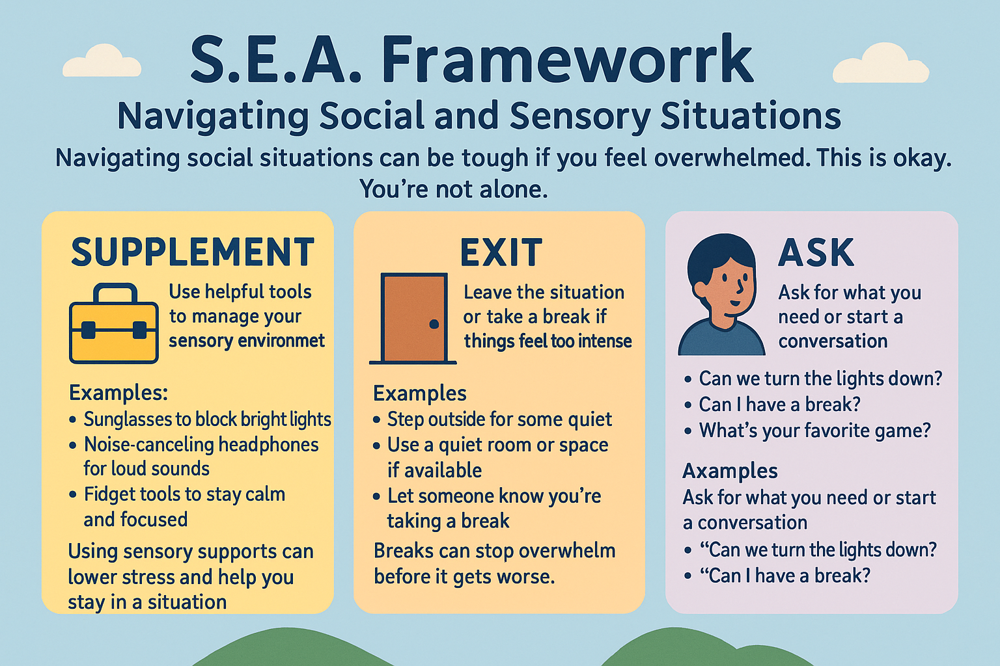

S.E.A. Framework: Navigating Social and Sensory Situations
Introduction
Navigating social situations can be tough—especially if lights are too bright, sounds are too loud, or you're unsure how to respond. This is okay. You’re not alone. The S.E.A. strategy can help: it stands for Supplement, Exit, and Ask—three steps you can take to feel more in control and comfortable in public or social spaces.

üß∞ Supplement
What it means: Use helpful tools to manage your sensory environment.
Examples: - Sunglasses to block bright lights - Noise-canceling headphones or earplugs for loud sounds - Fidget tools to stay calm and focused
Why it helps: Using sensory supports can lower stress and help you stay in a situation without getting overwhelmed. These are not "cheats"—they're smart tools.
Read more about sensory strategies from the National Autistic Society.
üö™ Exit
What it means: Leave the situation or take a break if things feel too intense.
Examples: - Step outside for some quiet - Use a quiet room or space if available - Let someone know you’re taking a break
Why it helps: Breaks can stop overwhelm before it gets worse. You're allowed to take space when you need it.
Subtle Excuses for Sensory Breaks * I'm going to go refill my water bottle. * I need to make a quick phone call. * I'm going to step outside for some fresh air. * I have to go to the restroom. * I'm going to go grab a snack from the kitchen. * I need to stretch my legs for a bit. * I'm going to go find a quieter spot to work/think. * I have to go check on something in my car/bag. * I'm going to take a short walk to clear my head. * I need to go find a comfortable spot to sit. * I'm going to go get some more paper/pen/pencils from the other room. * I have to go check the time/schedule. * I'm going to go take a few deep breaths outside. * I need to go find a spot with better lighting. * I'm going to go get a change of scenery for a bit. * I have to go get my bearings.
Alternatively, you can use these excuses in different situations, such as:
At Work or School
- I need to take a short break to focus on my task
- I'm going to go get a cup of coffee/tea
- I have to go attend to something in my office/locker
In Social Situations
- I'm going to go get some fresh air
- I need to make a quick phone call to check in with someone
- I'm going to go grab another drink/snack
In Public Places
- I need to go find a quieter spot to sit
- I'm going to go take a short walk around the block
- I have to go to the restroom to collect myself
Learn how quiet spaces can support autistic individuals.
üó£Ô∏è Ask
What it means: Ask for what you need or ask a question to start a conversation.
Examples: - “Can we turn the lights down?” - “Can I have a break?” - “What’s your favorite game?” to start talking with someone new
Why it helps: Asking helps people understand your needs—and gives you a way to take control of the situation.
Questions to Ask When Feeling Sensory Overload
- Can you please turn down the lights?
- Could you reduce the volume of the music/TV?
- Is it possible to move to a quieter area?
- Can I take a break and step outside for some fresh air?
- Could you please stop touching me/hugging me?
- Is there a way to reduce the strong smells in this area?
- Can you please turn off the fluorescent lights?
- Could you provide a pair of earplugs or headphones to help block out the noise?
- Is there a quiet room or space where I can go to calm down?
- Can you please reduce the number of people in this area?
- Could you help me find a comfortable and quiet spot to sit?
- Is it possible to take a break from this activity and do something else?
- Can you please provide a weighted blanket or fidget toy to help me calm down?
- Could you offer a pair of sunglasses to help with light sensitivity?
- Is there a way to reduce the background noise or distractions in this area?
- Can you please give me some space and let me have some alone time?
Basic Conversation Starters
- How was your weekend?
- What do you like to do in your free time?
- Have you traveled anywhere exciting recently?
- What's your favorite hobby and why do you enjoy it?
- How's your day going so far?
- What's something you're looking forward to doing in the coming weeks?
- Have you read any good books or seen any good movies lately?
- What's your favorite type of music and why do you like it?
- Do you have any fun plans for the upcoming holidays?
- What's something you're passionate about and why is it important to you?
- How do you like to spend a typical Sunday?
- What's the best advice you've ever received and who gave it to you?
- If you could try a new activity or hobby, what would it be and why?
- What's your favorite type of food and why do you like it?
- Have you learned any new skills or taken any interesting classes recently?
- What's something that's been on your mind lately and why is it important to you?
Tips on teaching and practicing self-advocacy from Autism Speaks.
Example Scenario
You’re at a birthday party and it’s really loud.
- Try Supplement: Put on your headphones.
- If that’s not enough, use Exit: Step outside for a few minutes.
- Then try Ask: “Can we lower the music a little?” or “What’s your favorite part of the party?”
Helpful Tools
These supports can make social situations easier:
- Supplement list: A list of things you can get to help before sensory issues strike.
- Visual Schedules: Show what’s happening and when
- Emotion Cards: Help you explain how you feel
- Social Stories: Short stories about how to handle situations
Conclusion
The S.E.A. framework gives you three steps:
- Supplement — Use tools like headphones or fidgets
- Exit — Take a break when needed
- Ask — Speak up or start a conversation
Practice using these steps and you’ll feel more confident in social settings. You are allowed to take care of yourself. You’ve got this!
Works Cited
- National Autistic Society – Occupational Therapy and Sensory Strategies
- The Autism Helper – Creating Quiet Break Areas
- Autism Speaks – Teaching Your Child Self-Advocacy
- National Autistic Society – Visual Supports
- Raising Children Network – Emotions for Autistic Children